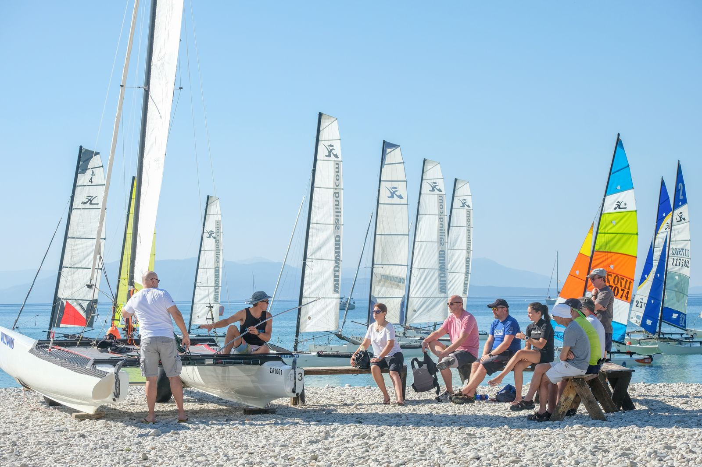
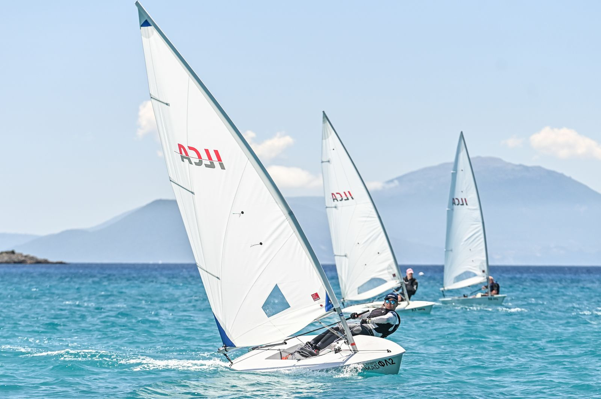
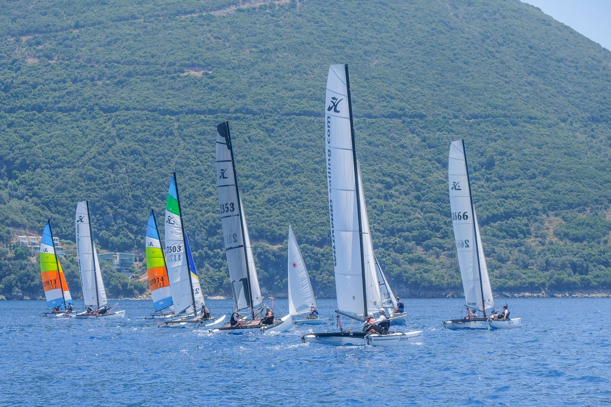
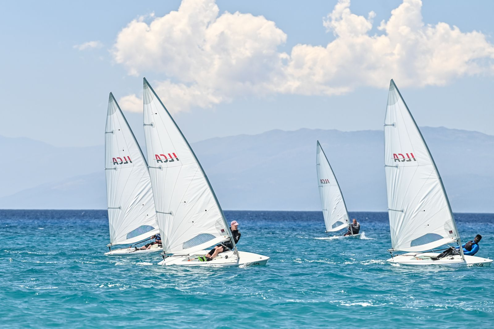
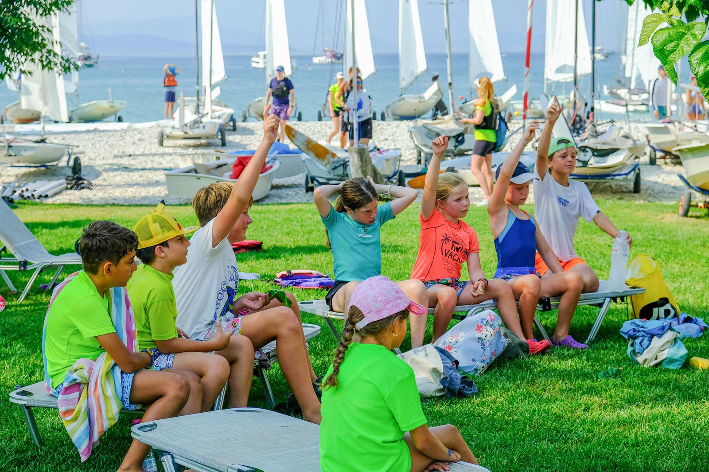
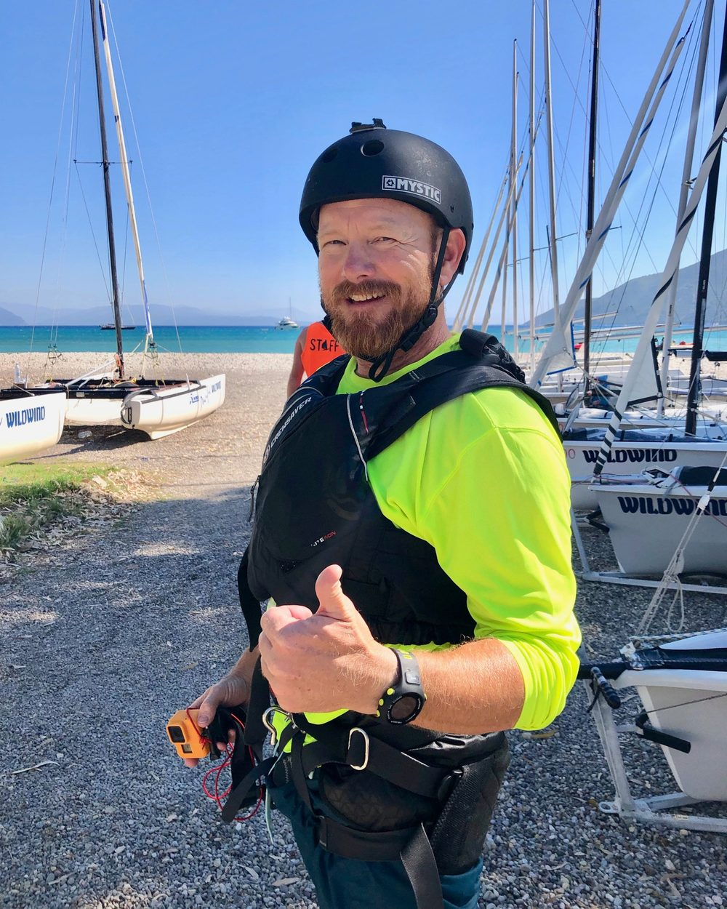

Seglingen · Vassilikibukten
En bred och skyddad vik där termikvinden kommer nästan varje dag, och en strand full av båtar. Här finns båtar för alla nivåer, från Optimist till Tornado.
Viken
Vassilikibukten ligger längst söderut på Lefkas. Den är bred och skyddad, omgiven av berg och med utsikt mot Kefalonia och Ithaka. Det är bergen bakom byn som ger oss vinden, dag efter dag.
Wildwind har funnits här i över 30 år. Instruktörerna är erfarna och lätta att prata med, och många har tävlat på nationell och internationell nivå. Skolan är RYA-certifierad och kör hela RYA:s kursplan.
Vinden
Det är termiken som gör Vassiliki. När solen värmer upp ön stiger luften mot det höga berget, och då fyller havsvinden på underifrån.
De flesta förmiddagar blåser en mild sjöbris in mot land. Den passar nybörjare som vill prova segling eller vindsurfing, och vana seglare som vill träna teknik på en snabbare båt eller köra freestyle på brädan.
De flesta eftermiddagar vrider vinden till cross-shore, längs stranden, och ökar. Då tränar de vana seglarna i mer vind, och nybörjare seglar med instruktör. Vi seglar mest Hobie 16 på eftermiddagarna.
Vad ingår?
Tillkommer

Clinics i maj
Hela maj kör vi Laser clinics i ILCA/Laser, för dig som vill bli bättre på trim, starter och fart.
En vecka i maj har vi också cat clinic med Joe, han som gör Joyrider TV.
Veckor och priser kommer med nästa prislista. Mejla mig redan nu så hör jag av mig när de är klara.

Båtarna
Här finns allt från förlåtande lärobåtar till olympiska klasser. Välj efter vind, nivå och lust, och byt gärna båt under veckan.

Antal båtar står till höger

Antal båtar står till höger
Båtlistan bygger på flottan 2026. Den kan se lite annorlunda ut inför 2027, men i stort sett är det samma båtar.
Segling och windsurfing
Vill du både segla och windsurfa? Då är Free as the Wind rätt paket. Det är seglingsveckan plus windsurfing hos Club Vass. Förmiddagens sjöbris passar bra för att lära sig eller köra freestyle, och på eftermiddagen blåser det upp.
Skriv din windsurfingnivå (nybörjare, medel eller avancerad) när du skickar förfrågan.
Foto: Club Vass
Kids Club
Alla barn mellan 7 och 17 år har fri tillgång till Kids Club, både på vattnet och på land, med egna instruktörer.
Grupperna beror på vilka som kommer. Oftast blir det en kidsgrupp för de yngre, och en grupp för tonåringarna när de är tillräckligt många. Det är toppen för barnen att vara med andra kids, och föräldrarna får leka på egen hand. Nybörjarna börjar i jollar och Hobie Cats, och den som redan kan segla kan gå RYA:s ungdomskurser.
Barn och ungdomar får rabatt, se prislistan.

Joe från Wildwind · Joyrider TV
Joe har varit instruktör på Wildwind sedan 90-talet och var beach manager i många år. I dag lever han på sina YouTube-filmer på kanalen Joyrider TV, men han syns ofta på stranden. Han har sina båtar här och de flesta filmerna är inspelade i viken.
Det finns över 260 filmer: riggning av Hobie 16 och F18, trapets, kantring, spinnaker, teknik i hård vind, snabba tips och onboardfilmer där Hobie 16:an går i 25 knop.

3 Reasons to come to Wildwind Sailing Holidays this summer (Joe, juli 2025)
Guided tour of Wildwind
The Wildwind Cat Fleet
The Wildwind sailing area
Hobie 16 onboard, a classic joyride
Grunderna i katamaransegling (på engelska).
Fler bilder och filmer från stranden och vattnet i Vassiliki hittar du på Wildwinds Instagram.
@wildwindsailingholidays på Instagram ↗Dags att boka?
I prisräknaren ser du priset för hela sällskapet direkt. Förfrågan kommer till mig, och jag kollar med Wildwind innan något blir bindande.